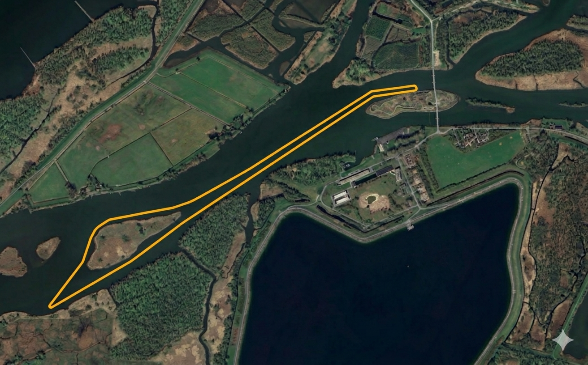

Partners & Sponsors
Sponsors 2025
Met dank aan onze trouwe partners die dit evenement mogelijk maken


Biesbosch MuseumEiland · 6 september 2026
Zwem door de adembenemende Biesbosch. 4, 2 of 1 km, voor iedereen. Samen voor ALS Nederland.
Nog tot de start
6 september 2026 · 09:00
Over het evenement
Na 11 edities wedstrijdzwemmen kiezen we voor een nieuwe aanpak — een open zwemtocht voor iedereen. Samen met ZwemAnalyse organiseren we op 6 september 2026 een onvergetelijke ochtend in de Biesbosch.
Een deel van de opbrengst gaat naar ALS Nederland — een organisatie die we een warm hart toedragen.
De perfecte start voor iedereen die voor het eerst open water wil zwemmen. Jeugd welkom, alle niveaus.
De meest gekozen afstand. Uitdagend, maar goed te doen voor zwemmers met open water-ervaring.
De volledige Biesbosch-ervaring. Vier keer de rivier over, langs unieke waterpartijen en ongerepte natuur.

Nieuws
19 augustus 2025
Over ruim 2 weken gaat de Challenge van start. Help ons zoveel mogelijk te doneren aan ALS Nederland.
Lees meer →22 juli 2025
De animo voor de Biesbosch Open Water Challenge is enorm. Zeker weten van je plek? Schrijf je snel in.
Lees meer →15 juli 2025
Na 11 mooie edities wedstrijd-zwemmen kiezen we voor een nieuwe aanpak: een open zwemtocht voor iedereen.
Lees meer →Partners & Sponsors
Met dank aan onze trouwe partners die dit evenement mogelijk maken
Contact
Vragen over de Challenge, het parcours of de inschrijving? We helpen je graag verder.